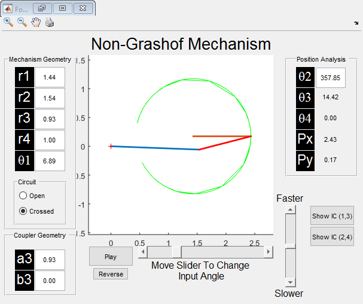
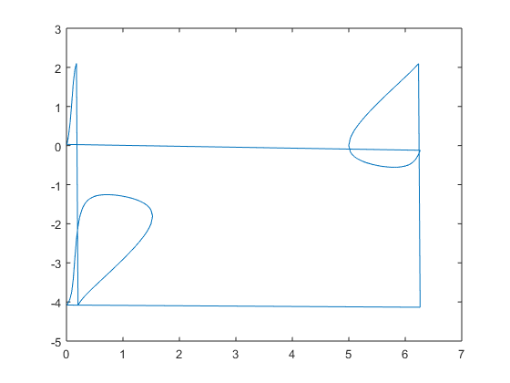

Contents
%see section 5.13 on pg.262
clear; clc;
Given:
beta2 = deg2rad(4); beta3 = deg2rad(8); beta4 = deg2rad(10); gamma2 = deg2rad(16); gamma3 = deg2rad(64); gamma4 = deg2rad(100); angles = [beta2; beta3; beta4; gamma2; gamma3; gamma4];
Free Choices/Constraints
Ulength = 1; sigma = 0; ux = Ulength*cosd(sigma); uy = Ulength*sind(sigma);
Iteration Variables
Wlength = 2; theta = 63; wx = Wlength*cosd(theta); wy = Wlength*sind(theta); Zlength = 3; phi = 95; zx = Zlength*cosd(phi); zy = Zlength*sind(phi); alpha2 = deg2rad(50); alpha3 = deg2rad(10); alpha4 = deg2rad(25); initialGuess = [wx; wy; zx; zy; alpha2; alpha3; alpha4];
Solution
solutions = fsolve(@four_bar_func_gen, initialGuess, optimoptions('fsolve','Display','iter'), angles, ux, uy);
Warning: Trust-region-dogleg algorithm of FSOLVE cannot handle non-square
systems; using Levenberg-Marquardt algorithm instead.
First-Order Norm of
Iteration Func-count Residual optimality Lambda step
0 8 109.385 22 0.01
1 16 25.9427 7.95 0.001 3.71217
2 24 1.93158 2.13 0.0001 2.37738
3 33 0.977549 1.74 0.001 1.84104
4 41 0.0218666 0.198 0.0001 0.587332
5 49 4.94571e-06 0.00187 1e-05 0.102953
6 57 1.07693e-11 4.35e-06 1e-06 0.00363427
7 65 3.02162e-20 1.37e-10 1e-07 1.5504e-05
Equation solved.
fsolve completed because the vector of function values is near zero
as measured by the default value of the function tolerance, and
the problem appears regular as measured by the gradient.
Map Solution
wx = solutions(1); wy = solutions(2); zx = solutions(3); zy = solutions(4); alpha2 = rad2deg(solutions(5)); alpha3 = rad2deg(solutions(6)); alpha4 = rad2deg(solutions(7)); gx = wx + zx - ux; gy = wy + zy - uy; Glength = sqrt(gx^2 + gy^2); Gang = rad2deg(atan2(gy, gx)); Wlength = sqrt(wx^2 + wy^2); Wang = rad2deg(atan2(wy, wx)); Zlength = sqrt(zx^2 + zy^2); Zang = rad2deg(atan2(zy, zx)); Ulength = sqrt(ux^2 + uy^2); Uang = rad2deg(atan2(uy, ux));
theta2 = linspace(0, 10, 100);
for i = 1:length(theta2) [angles, lengths, points, p] = four_bar_func([Gang theta2(i) 0 0], [Glength Wlength Zlength Ulength], [0 0], [1 0]);
if( i == 1) theta4_0 = angles(4); end
sigmas(i) = angles(4) - theta4_0; end
deltaSigma = diff(sigmas);
figure(2); clf; plot(theta2, sigmas); hold on; plot(theta2, theta2.^2);
W = wx + 1i*wy; Z = zx + 1i*zy; U = ux + 1i*uy; S = [0 0] angles = Four_Bar([W Z U S], [0 0], 'play', 'thetas', 'radians'); for i = 1:length(angles(:,2)) theta2(i) = angles(i,2); delta_theta4(i) = angles(i,4)-angles(1,4); end figure(3); clf; plot(theta2, delta_theta4);
S =
0 0
 